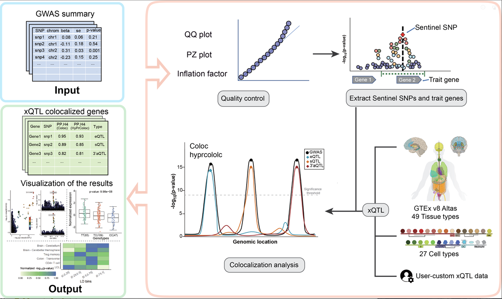
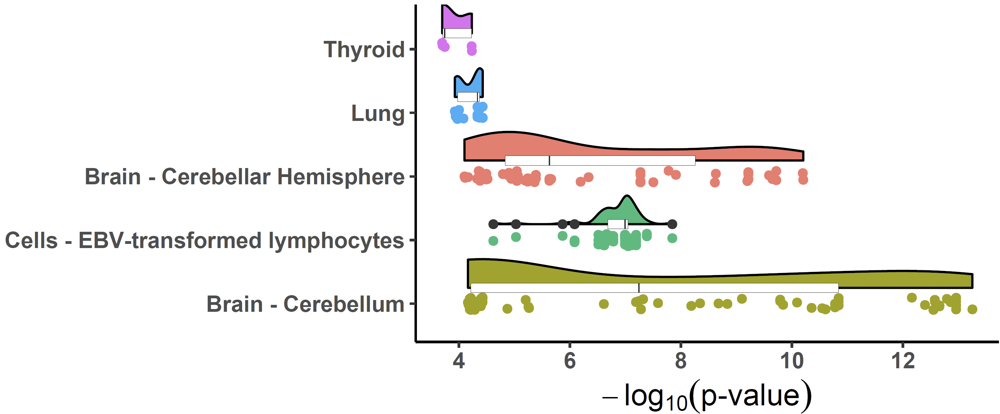

2. A quick application of coloclization analysis
2023-05-01
Source:vignettes/Quick_start.Rmd
Quick_start.RmdxQTLbiolinks has provided a pipeline for disease target gene discovery through colocalization analysis with xQTLs to detect susceptible genes and causal variants. 
Before we start
To perform colocalization analysis using xQTLbiolinks, users need to provide their own GWAS summary statistics data, specify the tissue of interest and import following packages:
Step 1. data pre-processing
Download and load an example file of summary statistics dataset
(GRCh38). We perform colocalization analysis in
Brain - Cerebellum.
gwasDF <- fread("https://master.dl.sourceforge.net/project/exampledata/gwasDFsub.txt")
tissueSiteDetail="Brain - Cerebellum"In this example, a data.table object of 16538 (rows) x 5 (cols) is loaded. Five columns are required (arbitrary column names is supported, but columns must be as the following order):
Col 1. “variants” (character), , using an rsID
(e.g. “rs11966562”);
Col 2. “chromosome” (character), one of the chromosome
from chr1-chr22;
Col 3. “position” (integer), genome position of snp;
Col 4. “P-value” (numeric);
Col 5. “MAF” (numeric). Allel frequency;
Col 6. “beta” (numeric). effect size.
Col 7. “se” (numeric). standard error.
head(gwasDF)#> rsid chrom position pValue AF beta se
#> 1: rs13120565 4 10702513 5.66e-10 0.6429 0.01825 0.00294
#> 2: rs4697781 4 10703243 8.94e-10 0.6446 0.01803 0.00294
#> 3: rs4697779 4 10701187 5.74e-09 0.3231 -0.01747 0.00300
#> 4: rs4697780 4 10701381 5.95e-09 0.3231 -0.01746 0.00300
#> 5: rs4547789 4 10702891 1.46e-08 0.3197 -0.01703 0.00300
#> 6: rs11726285 4 10700944 1.47e-08 0.3214 -0.01702 0.00301Step 2. Identify sentinel snps.
Sentinel SNPs can be detected using
xQTLanalyze_getSentinelSnp with the arguments
p-value < 5e-8 and
SNP-to-SNP distance > 10e6 bp. We recommend converting
the genome version of the GWAS file to GRCh38 if that is GRCh37 (run
with parameter: genomeVersion="grch37";
grch37To38=TRUE, and package rtracklayeris
required).
sentinelSnpDF <- xQTLanalyze_getSentinelSnp(gwasDF, pValueThreshold = 5e-08)After filtering, a sentinel SNP with P-value<5e-8 is detected in this example:
sentinelSnpDF#> rsid chr position pValue maf beta se
#> 1: rs13120565 chr4 10702513 5.66e-10 0.6429 0.01825 0.00294Step 3. Identify trait genes for each sentinel SNPs.
Trait genes are genes that located in the range of 1Mb (default, can
be changed with parameter detectRange) of sentinel SNPs.
Every gene within 1Mb of sentinel SNPs is searched by fuction
xQTLanalyze_getTraits. Besides, In order to reduce the
number of trait genes and thus reduce the running time, we take the
overlap of eGenes and trait genes as the final output of the function
xQTLanalyze_getTraits.
traitsAll <- xQTLanalyze_getTraits(sentinelSnpDF, detectRange=1e6, tissueSiteDetail=tissueSiteDetail)Totally, 3 associations between 3 traits genes and 1 SNPs are detected
traitsAll#> rsid chr position pValue maf beta se gencodeId
#> 1: rs13120565 chr4 10702513 5.66e-10 0.6429 0.01825 0.00294 ENSG00000002587
#> 2: rs13120565 chr4 10702513 5.66e-10 0.6429 0.01825 0.00294 ENSG00000109684
#> 3: rs13120565 chr4 10702513 5.66e-10 0.6429 0.01825 0.00294 ENSG00000261490Step 4. Conduct colocalization analysis.
For a single trait gene, like
ENSG00000109684 in above table, colocalization analysis (using
coloc method) can be performed with:
output <- xQTLanalyze_coloc(gwasDF, "ENSG00000109684", tissueSiteDetail=tissueSiteDetail) # using gene symboloutput is a list, including two parts: coloc_Out_summary and gwasEqtlInfo.
output$coloc_Out_summary#> nsnps PP.H0.abf PP.H1.abf PP.H2.abf PP.H3.abf PP.H4.abf
#> 1: 7107 7.097893e-11 1.32221e-07 3.890211e-06 0.00625302 0.993743
#> traitGene candidate_snp SNP.PP.H4
#> 1: ENSG00000109684 rs13120565 0.5328849For multiple trait genes, a for loop or lapply
function can be used to get all genes’ outputs (using both
coloc and hyprcoloc methods).
outputs <- rbindlist(lapply( unique(traitsAll$gencodeId), function(x){ # using gencode ID.
xQTLanalyze_coloc(gwasDF, x, tissueSiteDetail=tissueSiteDetail, method = "Both")$colocOut }))outputs is a data.table that combined all results of coloc_Out_summary of all genes.
outputs#> traitGene nsnps PP.H0.abf PP.H1.abf PP.H2.abf PP.H3.abf
#> 1: ENSG00000002587 6452 1.730175e-05 3.218430e-02 6.603361e-05 0.12198838
#> 2: ENSG00000109684 7107 7.097893e-11 1.322210e-07 3.890211e-06 0.00625302
#> 3: ENSG00000261490 6601 5.287051e-05 9.848309e-02 4.801374e-04 0.89435622
#> PP.H4.abf candidate_snp SNP.PP.H4 hypr_posterior hypr_regional_prob
#> 1: 0.84574398 rs13120565 0.4140146 0.5685 0.9694
#> 2: 0.99374296 rs13120565 0.5328849 0.9793 0.9999
#> 3: 0.00662768 rs13120565 0.4219650 0.0000 0.0101
#> hypr_candidate_snp hypr_posterior_explainedBySnp
#> 1: rs13120565 0.2726
#> 2: rs13120565 0.4747
#> 3: rs13120565 0.4118Step 5. Visualization of the results.
For the potential casual gene ENSG00000109684 (PP4=0.9937 & hypr_posterior=0.9793), we can get its significant associations across tissues:
xQTLvisual_eqtl("ENSG00000109684")
For the purpose of visualization of p-value distribution and comparison of the signals of GWAS and eQTL: We merge the variants of GWAS and eQTL by rsid first.
eqtlAsso <- xQTLdownload_eqtlAllAsso(gene="ENSG00000109684",
tissueLabel = tissueSiteDetail)
gwasEqtldata <- merge(gwasDF, eqtlAsso[,.(rsid=snpId, position=pos, maf, pValue)],
by=c("rsid", "position"), suffixes = c(".gwas",".eqtl"))Function xQTLvisual_locusCompare displays the candidate
SNP rs13120565
(SNP.PP.H4=0.5328849 &
hypr_posterior_explainedBySnp=0.4747) in the top right
corner:
xQTLvisual_locusCompare(gwasEqtldata[,.(rsid, pValue.eqtl)],
gwasEqtldata[,.(rsid, pValue.gwas)], legend_position = "bottomright")Note: The information on SNP linkage disequilibrium is automatically downloaded online. Due to network issues, the download may fail at times. If this happens, please try running it again.

Locuszoom plot of GWAS signals:
xQTLvisual_locusZoom(gwasEqtldata[,.(rsid, chrom, position, pValue.gwas)], legend=FALSE)
LocusZoom plot of eQTL signals:
xQTLvisual_locusZoom(gwasEqtldata[,.(rsid, chrom, position, pValue.eqtl)],
highlightSnp = "rs13120565", legend=FALSE)
Violin plot of normalized expression of eQTL (rs13120565-ENSG00000187323.11):
xQTLvisual_eqtlExp("rs13120565", "ENSG00000109684", tissueSiteDetail = tissueSiteDetail)
We can also combine locuscompare and locuszoom plot using
xQTLvisual_locusCombine:
xQTLvisual_locusCombine(gwasEqtldata[,c("rsid","chrom", "position", "pValue.gwas", "pValue.eqtl")],
highlightSnp="rs13120565")
Colocalized loci should show a general pattern where SNPs in high LD
will show strong associations with expression levels of the colocalized
gene, and the eQTL associations will weaken for SNPs in lower LD. This
pattern of the eQTL varies among different tissues / cell-types, the
strength of which indicates the power of the regulatory effect of the
variant. We can visualize the correlation between p-values of eQTLs and
LD across numerous tissues/cell types to easily distinguish this patten
using xQTLvisual_coloc:
multi_tissue_coloc <- xQTLvisual_coloc(gene="ENSG00000109684", variantName="rs13120565",
tissueLabels = c("Brain - Cerebellar Hemisphere",
"Brain - Cerebellum", "Thyroid", "Lung",
"Cells - EBV-transformed lymphocytes"))
For applying xQTLbiolinks to a whole case study, please
find this Document.